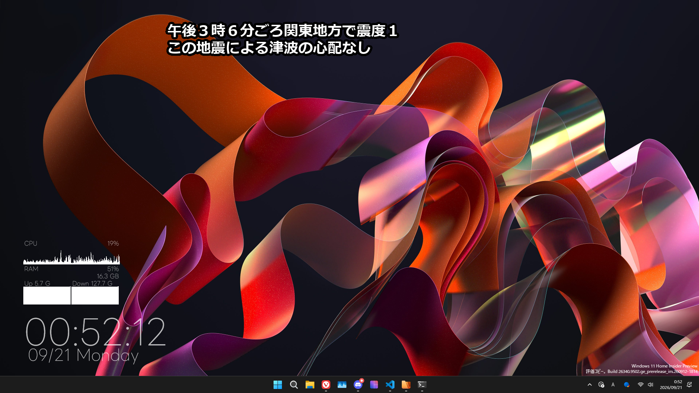
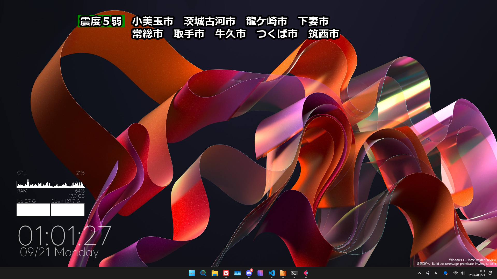
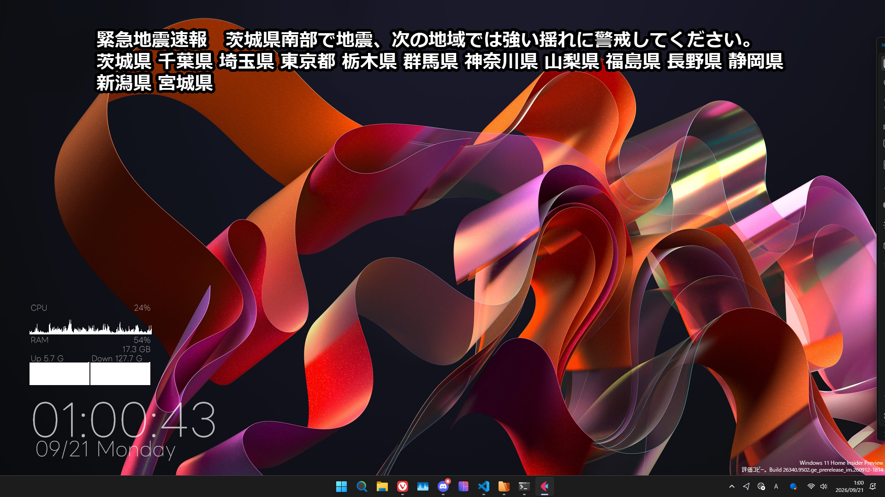
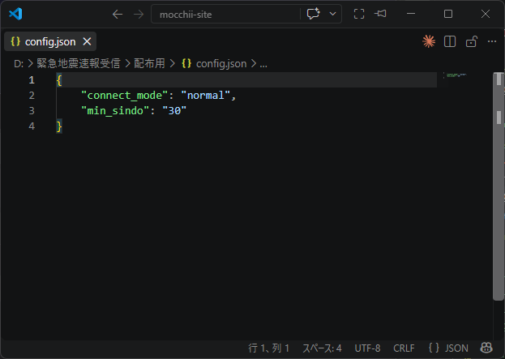

文字スーパーみたいなのをパソコンで表示するやつ
なんかテレビで見たことあるよね。。ね？
あれです。あれをパソコンにオーバーレイするやつです。
真面目に説明すると、P2P地震情報のAPIから緊急地震速報とか震度速報とかを受信して
リアルタイムで表示するソフトです。
動作イメージ

某公共放送みたいなテロップ表示
某公共放送を見てる人ならわかるはず...!
そんなテロップと言い回し
再現ではありません。リスペクトですyo!

やっぱり見覚えあるテロップ
地域ごとの震度情報テロップも...なんか見覚えあるような？

これだけは独自デザイン
地震情報とテロップ技術を共通にさせたかったので...
(地図とかは)ないです

利用しているAPIについて
P2P地震情報APIを利用してデータを受信しています。配信元の状況によってデータが遅延、または届かない可能性があります。テレビや他の防災アプリケーションと併用してご利用ください。
利用に関する注意事項
ソフトの多重起動はサーバーに負荷をかける原因となってしまうため、お控え下さい。(P2P地震情報APIの使用上、IPアドレスあたりの同時接続は2つまでです。)また、今後のアップデートで同時起動を制限する可能性があります。
【他アプリとの競合に関する注意：例 他の地震関連アプリケーション（同じP2P地震速報APIを利用しているソフトなど）と同時に起動した場合、通信が競合して正常に通知を受け取れないことがあります。】
【ダウンロードエリアのタイトル：例 今すぐダウンロード】
【利用についてのタイトル：例 ご利用に関する注意事項】
【多重起動に関する注意：例 本アプリの多重起動（二重起動）は、データ配信サーバーに過度な負荷をかけてしまうため絶対におやめください。（今後のアップデートで同時起動を自動制限する可能性があります）】
【他アプリとの競合に関する注意：例 他の地震関連アプリケーション（同じP2P地震速報APIを利用しているソフトなど）と同時に起動した場合、通信が競合して正常に通知を受け取れないことがあります。】
【対応OSや配布形式の説明：例 Windows 10 / 11 に対応。解凍してすぐ使えるzip形式です。】